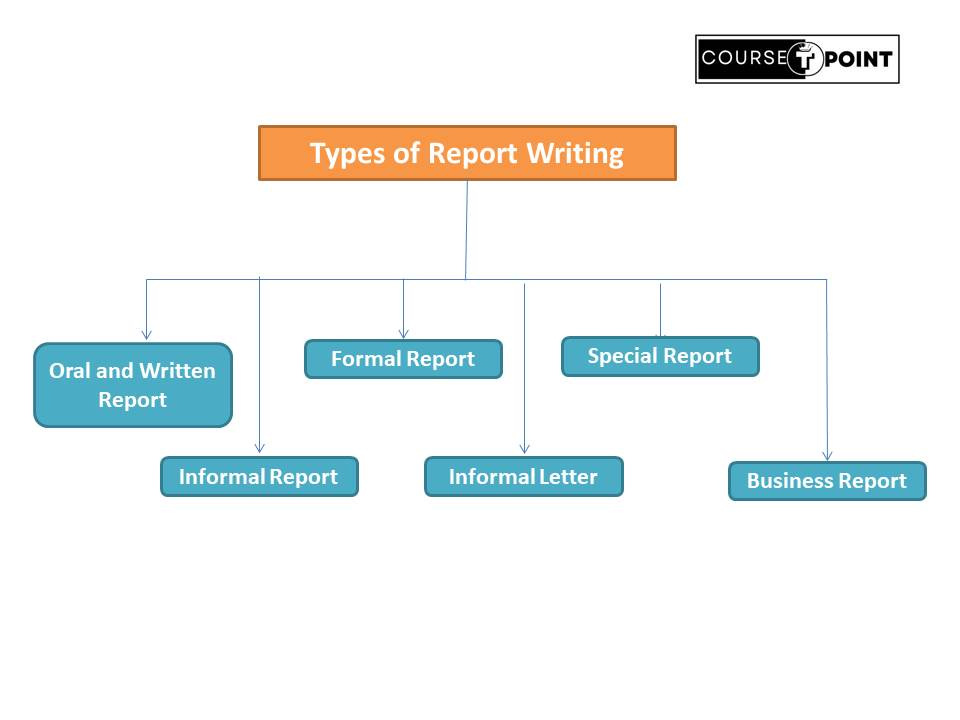

Technical Documentation Presentation
| Table Of Content | |
|---|---|
Accuracy and Conciseness in Technical English.
Technical English is a specified form of communication that convey technical or complex information
in a
clear and understandable manner to a specific audience.
It is used across various fields such
as
Engineering, Science, Medicine and technology to facilitate the exchange of knowledge intruction and
data. The Primary goal to Bridge the gap between experts and non-experts, ensuring that effectively
conveys enabling informed decision-making problem solving and efficient collaborating.
- Contain a technical message.
- Mostly formal in style and approach.
- Follow a set Pattern.
- Both Oral and Written.
- Always for a specific audience.
Process in Technical English
- Identify the Audience: First analysis the audience which type of person. Understand their knowledge level, background, and specific needs of Understand their knowledge level, background, and specific needs to idea your communication accordingly.
- Determine the Purpose: Decide a Object and anaysis the Objective achieve in future.
- Gather Information: Collect all relevant information about the topic you're writing about.
- Organize the content: Structure your document logically to present information in a clear and coherent manner.
- Using Technical Terminology: Utilize precise technical terminology relevant to the subject matter.
- Writing Clearly and Concisely: Write in clear, concise language that is easy to understand. Avoid unnecessary jargon, acronyms, or overly complex sentences that may confuse the reader.
- Use Visual aids: Enhance understanding by including visuals such as diagrams, charts, graphs, or tables to illustrate complex concepts or data.
- Reviewing and Editing: Proofread your document carefully to eliminate errors in grammar, punctuation, spelling, and formatting. Review the content for accuracy, consistency, and completeness.
- Testing and Validation: It may be necessary to test the communication with the intended audience to ensure it effectively conveys the desired information and achieves the intended outcomes.
- Documenting Revisions: Keep track of any revisions or updates made to the document, especially in technical documents that may undergo multiple iterations.
- Publishing and Distribution: Once finalized, publish or distribute the technical communication through appropriate channels such as print, online platforms, email, or presentations.
- Receive Feedback: After publish the document take the feedback of the audience and modify if it necessary.
Form of Technical English
- Oral Forms
- Face to Face Communication
- Meeting
- Teleconferencing
- Seminars
- conference
- Instructions
- Presentation
- Interview
- Group Discussion
-
Written form
- Memos
- Notice
- Letter
- Circular
- Reports
- Thesis
- Manuals
- Bulletins
Principle/Features
- Clarity: It will help readers get understand what you want to communicate.
There are some ways to make you writing clearly by giving specific information, answeing the reporter's question and using easy words. - Conciseness: It can help to save time in writing.
conciness can make your communication more transparency to the reader. - Accuracy: It is the another important goal in technical english.
If your message contains many spelling mistakes or grammitical mistakes the reader will think that you're unprofessional or lazy. That ensure accurate writing, you can use some improve reading tips. - Consistency: Consistent use of language and formatting conventions helps readers navigate the content more easily.
- Precision: Precision is essential in technical English to convey information accurately and with specificity. This includes using precise terminology, providing exact measurements.
Report
A Report is a self explanatory document of facts and information relating to specific subject and serves the purpose of providing Information for decision making and follow up action. It is systematic presentation of as certained facts about a specific event/subject. The Information is needed for reviewing and evaluating progress for planning future course of action and for taking decision.
Every Organization has a system of routine, periodical reporting on the progress and the status of different activities.
Features of Report
- Complete and Compact Document: Report is a complete and compact written document giving update information about a specific problem.
- Systematics Presentation of facts: Report is a systematic presentation of facts, figures, conclusion and recommandations.
- Prepared in writing: Reports are usually in writing, Writing Report are useful for reference Purpose. It is serves as complete, compact and self-Explanatory document over a long period.
- provide information and Guidance: Report is Valuable document which gives information and the guidence the management while framing in future policies.
- Act as a Permanent Record: A Report serves as a parmanent Report Relating to certain incident or task.
Purpose
- To Determine the requirement of Personnel.
- To Enable the preparation of various budgets.
- To improve the quality of Production.
- To Get the Information Regarding the market.
- To carry the information from some one who has it to Someone who need it.
Types of Report Writing
Oral and Written Report
A report may be either Oral and Written. An Oral report is simple and easy to present. It may consist in the communication of an impression and an Observation.
A Written report can change hands without any danger of distorting during transmission. It can preserve for long time.
Informal Report
An Informal Report is usually in the form of person-to-person communicating it may range from a short, almost fragmentary statements of feats a single page. Generally it is short in length as well as unofficial way.
Formal Report
The Formal report is the collection of data and information i.e complex and used at a Official manner. Helps the management in framing policies or taking other important decisions.
Technical Report
The Technical Report differ from other reports primarily in its subject matter. A technical report is a document that explains technical information or findings in a clear and organized way. A Technical report can be much like the memorandum report we have describe.
Special Report
Special Report are related to a single or special Occasion. Specail report deal with special type problem.
Business Report
It may be define as formal communication, which moves upwards. The subordinate gives the report to the superiors. These are factual comunication by a lower level to higher level of authority.
Classification of Reports
-
On the Basis of purpose
- External Report: External Reports are which send outside the organization. The shareholders, government, bankers etc examples of these reports are annual reports.
- Internal Report: Internal Reports used within the Organization in different level of management. These are not public documents. Internal report meant for Top,middle and lower level of management.
-
On the Basis of Period
- Routine Report: These reports are submitted to the level of management as per fixed time schedule. These are the periodic reports, most of internal report are the routine Report.
- Special Report: Special Reports are needed for special purposes. A Special report may required coordination of various functions such as marketing, industrial Engineering.
-
On the Basis of Function
- Operational Report: These reports provide information about the operation
of
company of different functional level.They can be classified into the following:
- Control Report
- Information Report
- Venture Measurement Reports
- Financial Report: Financial Report provide the information about the
Financial
position of company.
- Static Reports: Static reports show the financial position on particular date the balance sheet is a static Report.
- Dynamics Reports: Dynamics report shows the financial position during specific period, fund flow statement , cash flow statement are the examples of dynamic reports.
- Operational Report: These reports provide information about the operation
of
company of different functional level.They can be classified into the following:
-
On the Basis of Length
- Short Report: A short report is a concise document that convey's information or finding on specific topic and issue. It is concise ,accurate and unbaised that needs not detailed introduction. It is often used in business communication.
- Long Report: A long report is simply and expansion of short report. It is involve greater length and depth of discussion of more complex problem.
There are several ways of Classification of Business Report.
Short Report
A short report is a concise document that provides a brief overview or summary of a specific topic, issue, or event. Unlike longer reports, which may contain extensive analysis and detail, short reports are focused and to the point, typically consisting of a few pages or less.They are designed to convey essential information in a clear and simple manner, making them easy to read and understand.
Format of Short Report
- Cover: The Cover Gives the first impression and you should not crowd it with irrelevent Information.
- Title Page: Title or heading of the Report the person to whom it is submitted, the date of submission and the name of writter and topic.
- Preface: The preface introduces the report (It is not the subject matter of the report). It is written about the Author.
- Acknowledgement: It mentions the name of persons and organization that have helped in preparing report.
- Table of Content: If the report long means more than ten pages, then it is essential to give table of content in starting it is not proper detail about the topic but it is help to go/jump direct on the specific page of the report.
- List of Illustration: If the report contain many Illustration (table and figures.) Then it give after the table of content. provides a systematic summary of all the figures, tables, charts, diagrams, and other visual aids included within the text.
- Abstract of Summary: An abstract is a concise summary of a research paper, thesis, report or academic article.
- Body of the report: Main content are writen in the body of the Report in introduction are expanded.
- conclusion: The conclusion summaries and finding the main motive of the report. The conclusion must has not content any new idea that has not been previously mentioned in the report.
Long Report
A long report is a detailed and comprehensive document that provides in-depth analysis, research findings, and recommendations on a specific topic or issue.
- Major difference is that the long report involves greater length and depth of discussion of more complex problem.
- some long reports extends from a few pages to several hundred even into several volumes of information.
- It is a mix information of information.
Format of Long Report
- Title page:The title page of the report should be seperate cover page and contain 'The Title'.
- Acknowledgement: Acknowledgement are needed because certain people in the organisation have helped in the shaping of the report, hence due credit should be given on page entitled Acknowledgement.
- Letter of Authorisation: If the report writer has been authorised to prepare a report by the letter, the same should be affixied to the report.
- Summary/Abstract: This part of the report summarises the ground covered in the body of the report so that anyone can have quick review of what the report is about.
- Table of Content: The table of contents is esstential for any report that is longer than about dozen pages.
- Introduction: The introduction gives a broad general overview of the subject. This part prepares the readers for absorbing Greater details.
- Body of the report: Main content are writen in the body of the Report in
introduction
are expanded.
- Methodology
- Design
- conclusion: The conclusion summaries and finding the main motive of the report. The conclusion must has not content any new idea that has not been previously mentioned in the report.
- Recommendations: After analysing all the facts, the author of the report is most likely to able to make recommanedations on the course of action.
- Plan of Action/ Future Direction: Occasionally the report may act as a problem solver when occur in future.
- Reference: Through out the text, it may be necessary to refer to other documents. Readers can then turn to these for confirmation and futher study.
- Appendices: Sometimes the author may want to include supporting information in the report. Additional supplementary materials, data tables, charts, or documents that support the findings of the report but are not included in the main body of the text.
- Bibliography: This is the list of books and other reference sources form used by the author to prepare the report.
Thesis
The word 'Thesis' comes from Greek language and it refers to an intellectual preposition.
A 'Thesis' comes is a document that presented for doctorate degree. In simple terms, a thesis is like a big research project or paper that someone does to get a higher-level academic degree, such as a Master's or Ph.D. It's usually about something specific they want to learn more about or understand better. They study the topic, do research, and then write a long document that explains what they found out and what it means. It's a way for them to show they've become an expert on that topic.
Content of Thesis
- Title page
- Table of Content
- Acknowledgement
- preface
- Problem statement and research Methodology
- Theorical Background
- Description of Date gathering and analysis method.
- Findings or Empirical study
- Conclusion
- Recommandations
- References
- Bibliography
- Appendices
Similarities Between Report and Thesis
- Report and Thesis, both present information in a systematic manner.
- They record facts and results of investigation or survey for future Reference.
- Both recommandations for future use.
- Both are used to guide in decision making.
- Both are written for a specific audience.
Difference Between a Report and Thesis
- A Report is Generally prepared for business point of view where Thesis are Generate for Academic Purpose.
- Thesis Provides more detailed information than a report.
- A report may be oral or written whereas a thesis is always in a written form.
- Thesis required more knowledge and expertise compare to report writing.
- There is difference in the contents of Report and Thesis.
Long Dissertation
It's usually done by people in college or university, especially when they're getting a higher-level degree like a Master's or Ph.D. Instead of just writing a regular essay, they spend a lot of time researching and studying one topic really deeply. Then, they write a huge document all about what they learned, what they found out, and why it's important. It's kind of like becoming an expert on that topic and showing it to everyone.
Format of Dissertation
- Introduction
- Literature Review
- Methodology
- Discussion
- Conclusion
- Suggestion
Difference Between Short Report and Long Dissertation
| S.NO | Basis of Difference | Short Report | Long Dissertation |
|---|---|---|---|
| 1 | Purpose | Provide concise and summary view of a document | Provide detailed research findings and analysis |
| 2 | length | Generally less than 15 pages are required for short report. | Generally 150-300 pages and more pages required for long Dissertation. |
| 3 | Type of communication | Short Report are formal and Informal Both. | Where Long Dissertation is Formal in nature. |
| 4 | Depth of Analysis | Limited Analysis and Discussion. | Discussion and Analysis in Depth. |
| 5 | Used for | Used for Organization purpose. | Used for Academic Purpose. |
| 6 | Audience | Audience such as Stakeholder,Employee, manager and internal use. | Audience such as Faulty, Academic Community. |